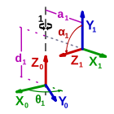

วัตถุประสงค์การเรียนรู้Learning objectives
เมื่อเรียนจบบทนี้ นักศึกษาจะสามารถ: After completing this chapter, students will be able to:
- เขียนเมทริกซ์การหมุนในระนาบและรอบแกนหลักทั้งสาม และใช้สมบัติของมันตรวจสอบความถูกต้องWrite the planar and the three elementary rotation matrices, and use their properties as a check.
- สร้างเมทริกซ์การแปลงเอกพันธ์ คูณต่อกันเป็นโซ่ และหาเมทริกซ์ผกผันได้โดยไม่ต้องกลับเมทริกซ์ทั้งก้อนBuild homogeneous transformations, chain them, and invert one without inverting the whole matrix.
- กำหนดพารามิเตอร์ DH ของแขนกลที่กำหนดให้ และเขียนเป็นตารางที่ใช้คำนวณต่อได้Assign Denavit–Hartenberg parameters to a given arm and tabulate them for computation.
- คำนวณจลนศาสตร์ไปข้างหน้าของหุ่นยนต์คาร์ทีเซียน SCARA และอาร์ติคูเลตได้Compute the forward kinematics of Cartesian, SCARA and articulated robots.
- แก้จลนศาสตร์ย้อนกลับของแขนสองลิงก์ในรูปปิด และอธิบายที่มาของคำตอบหลายชุดSolve the inverse kinematics of a two-link arm in closed form and explain why several solutions exist.
- ใช้จาโคเบียนระบุจุดเอกฐาน และอธิบายว่าทำไมความเร็วข้อต่อจึงพุ่งสูงใกล้จุดนั้นUse the Jacobian to locate singularities and explain why joint speeds blow up near one.
- อธิบายหลักการของหุ่นยนต์ขนานแบบเดลต้า และบอกว่าเหตุใดจลนศาสตร์ย้อนกลับจึงง่ายกว่าไปข้างหน้าExplain how a parallel delta robot works and why its inverse kinematics is easier than its forward.
- สร้างสถานีจำลองใน RoboDK ตรวจการชนและจุดเอกฐาน แล้วส่งออกโปรแกรมไปยังหุ่นยนต์จริงBuild a RoboDK station, check for collisions and singularities, and post a program to a real robot.
แบบทดสอบก่อนเรียนPre-test
ตอบก่อนอ่านเนื้อหา เพื่อสำรวจความเข้าใจเดิม ระบบเฉลยพร้อมคำอธิบายทันทีเมื่อกด “ตรวจคำตอบ” Answer before reading. Explanations appear as soon as you check your answers.
9.1 เมทริกซ์การหมุน9.1 Rotation matrices
บทที่ 8 แนะนำเฟรมอ้างอิงไว้แล้วในฐานะแนวคิด บทนี้ต้องการตัวเลข คำถามพื้นฐานคือ ถ้ารู้พิกัดของจุดหนึ่งในเฟรม \( \{B\} \) จะหาพิกัดของจุดเดียวกันในเฟรม \( \{A\} \) ได้อย่างไร คำตอบแยกเป็นสองส่วนคือการหมุนกับการเลื่อน และเราเริ่มที่การหมุนก่อน Chapter 8 introduced reference frames as an idea. This chapter wants numbers. The basic question is: given a point’s coordinates in frame \( \{B\} \), what are the same point’s coordinates in frame \( \{A\} \)? The answer separates into a rotation and a translation, and the rotation comes first.
ให้เฟรม \( \{B\} \) หมุนไปจากเฟรม \( \{A\} \) เป็นมุม \( \theta \) รอบแกนที่ตั้งฉากกับระนาบ เวกเตอร์หนึ่งหน่วยของ \( \{B\} \) เมื่อมองในพิกัดของ \( \{A\} \) คือ \( (\cos\theta,\ \sin\theta) \) และ \( (-\sin\theta,\ \cos\theta) \) การนำสองเวกเตอร์นี้มาวางเป็นหลักของเมทริกซ์จะได้ Let \( \{B\} \) be rotated from \( \{A\} \) by an angle \( \theta \) about the axis normal to the plane. The unit vectors of \( \{B\} \), expressed in \( \{A\} \)’s coordinates, are \( (\cos\theta,\ \sin\theta) \) and \( (-\sin\theta,\ \cos\theta) \). Writing those two as the columns of a matrix gives
เมทริกซ์การหมุนมีสมบัติที่ใช้ตรวจงานได้ทันที หลักทุกหลักมีความยาวหนึ่งหน่วยและตั้งฉากกันทุกคู่ เมทริกซ์จึงเป็นเมทริกซ์ตั้งฉาก ผลที่ตามมาคือ A rotation matrix carries properties that serve as an immediate check. Every column is a unit vector and every pair is orthogonal, so the matrix is orthonormal. It follows that
เมื่อคำนวณเมทริกซ์การหมุนออกมาได้ ให้ตรวจสองอย่างเสมอ หนึ่งคือผลคูณของเมทริกซ์กับทรานสโพสของตัวเองต้องได้เมทริกซ์เอกลักษณ์ สองคือดีเทอร์มิแนนต์ต้องเป็น \( +1 \) พอดี ถ้าได้ \( -1 \) แสดงว่าสลับทิศแกนไปหนึ่งแกนจนกลายเป็นระบบมือซ้าย ซึ่งเป็นความผิดพลาดที่พบบ่อยและทำให้หุ่นยนต์เคลื่อนที่สะท้อนกลับด้าน Whenever a rotation matrix has been computed, check two things. First, the matrix times its own transpose must give the identity. Second, the determinant must be exactly \( +1 \). A value of \( -1 \) means one axis has been flipped into a left-handed set — a common slip, and one that makes the robot move mirrored.
ในสามมิติ การหมุนรอบแกนหลักแต่ละแกนให้เมทริกซ์สามตัวต่อไปนี้ สังเกตว่าแกนที่หมุนรอบจะมีแถวและหลักที่เป็นเวกเตอร์หนึ่งหน่วยเดิมไม่เปลี่ยน In three dimensions, rotating about each principal axis gives the three matrices below. Notice that the axis being rotated about keeps its own row and column unchanged.
โดย \( c\theta \) และ \( s\theta \) ย่อมาจาก \( \cos\theta \) และ \( \sin\theta \) ซึ่งเป็นสัญกรณ์มาตรฐานที่ใช้ตลอดบทนี้เพื่อให้เมทริกซ์อ่านง่ายขึ้น Here \( c\theta \) and \( s\theta \) abbreviate \( \cos\theta \) and \( \sin\theta \), the standard notation used throughout this chapter to keep the matrices readable.
การหมุนรอบแกน \( z \) เก้าสิบองศาแล้วตามด้วยรอบแกน \( y \) เก้าสิบองศา ให้ผลต่างจากการสลับลำดับอย่างสิ้นเชิง เพราะ \( \mathbf{R}_z\mathbf{R}_y \ne \mathbf{R}_y\mathbf{R}_z \) ลองทำกับหนังสือหนึ่งเล่มจะเห็นทันที นี่คือเหตุผลที่ระบบหุ่นยนต์ทุกยี่ห้อต้องระบุ ลำดับ ของมุมออยเลอร์ไว้ในเอกสาร และเป็นเหตุผลที่การคัดลอกค่ามุมจากหุ่นยนต์ยี่ห้อหนึ่งไปใส่อีกยี่ห้อหนึ่งโดยตรงมักให้ท่าที่ผิด Rotating ninety degrees about \( z \) and then ninety about \( y \) is not the same as doing them the other way round, because \( \mathbf{R}_z\mathbf{R}_y \ne \mathbf{R}_y\mathbf{R}_z \). Try it with a book and the difference is immediate. This is why every robot vendor documents the order of its Euler angles, and why copying angle values straight from one brand into another usually produces the wrong pose.
9.2 เมทริกซ์การแปลงเอกพันธ์9.2 The homogeneous transformation
เมื่อเฟรม \( \{B\} \) ทั้งหมุนและเลื่อนไปจากเฟรม \( \{A\} \) พิกัดของจุดเดียวกันในสองเฟรมสัมพันธ์กันดังนี้ When frame \( \{B\} \) is both rotated and displaced from frame \( \{A\} \), the coordinates of one point in the two frames are related by
สมการนี้ถูกต้องแต่ใช้งานลำบาก เพราะการต่อเฟรมหลายชั้นเข้าด้วยกันจะกลายเป็นการคูณสลับกับการบวกไปมา วิธีแก้คือเพิ่มมิติที่สี่ที่มีค่าเป็นหนึ่งเข้าไปในเวกเตอร์ตำแหน่ง แล้วรวมการหมุนกับการเลื่อนไว้ในเมทริกซ์ \( 4 \times 4 \) ก้อนเดียว เรียกว่า เมทริกซ์การแปลงเอกพันธ์ That is correct but awkward, because chaining several frames turns into an alternating sequence of multiplications and additions. The remedy is to append a fourth coordinate equal to one and fold the rotation and the translation into a single \( 4 \times 4 \) matrix, the homogeneous transformation.
ประโยชน์ที่แท้จริงปรากฏตอนต่อโซ่ การแปลงจากเฟรม \( \{A\} \) ไปเฟรม \( \{C\} \) ผ่าน \( \{B\} \) เป็นเพียงการคูณเมทริกซ์ และลำดับของการคูณอ่านได้จากดัชนีที่ติดกันตรงกลาง The real benefit appears on chaining. Going from frame \( \{A\} \) to frame \( \{C\} \) by way of \( \{B\} \) is just a matrix product, and the order can be read off from the indices that meet in the middle.
ส่วนการกลับทิศไม่จำเป็นต้องหาเมทริกซ์ผกผันของเมทริกซ์ \( 4 \times 4 \) ซึ่งเสียเวลา เพราะโครงสร้างพิเศษของมันให้สูตรลัดที่ใช้เพียงทรานสโพสกับการคูณเวกเตอร์หนึ่งครั้ง Reversing the direction needs no general \( 4 \times 4 \) inverse, which would be wasteful: the special structure gives a shortcut using one transpose and one matrix–vector product.
หน้าแปลนข้อมืออยู่ที่ \( (400, 300, 250) \) mm ในเฟรมฐาน และหมุนไป \( 90\deg \) รอบแกน \( z \) เทียบกับเฟรมฐาน มือจับทำให้ TCP อยู่ห่างจากหน้าแปลน \( (0, 150, 0) \) mm ในเฟรมเครื่องมือ จงหาตำแหน่งของ TCP ในเฟรมฐาน The wrist flange sits at \( (400, 300, 250) \) mm in the base frame, rotated \( 90\deg \) about \( z \) relative to it. The gripper puts the TCP \( (0, 150, 0) \) mm from the flange in the tool frame. Find the TCP in the base frame.
ถ้าใช้สมการ (8.15) ซึ่งบวกเวกเตอร์ตรง ๆ จะได้ \( (400, 450, 250) \) ซึ่งผิดไป 212 mm ความผิดพลาดนี้ไม่ได้เล็กลงเมื่อมือจับสั้นลง แต่แปรตามความยาวมือจับโดยตรง และจะเปลี่ยนไปทุกครั้งที่ข้อมือหมุน นี่คือเหตุผลทั้งหมดที่ต้องมีเมทริกซ์การหมุนอยู่ในสมการ Using equation (8.15), a plain vector sum, would give \( (400, 450, 250) \) — wrong by 212 mm. The error does not shrink with a shorter gripper; it scales directly with the gripper’s length and changes every time the wrist turns. That is the whole reason the rotation matrix has to be in the equation.
9.3 พารามิเตอร์ Denavit–Hartenberg9.3 Denavit–Hartenberg parameters
สมการ (9.6) บอกว่าการต่อเฟรมคือการคูณเมทริกซ์ แต่ยังเหลือคำถามว่าจะวางเฟรมที่ข้อต่อแต่ละตัวอย่างไรให้ไม่สับสน ถ้าแต่ละคนวางตามใจตัวเอง ตารางตัวเลขที่ได้จะเทียบกันไม่ได้เลย Denavit และ Hartenberg เสนอกติกาที่ทำให้การวางเฟรมเป็นมาตรฐาน และทำให้การแปลงจากเฟรมหนึ่งไปเฟรมถัดไปใช้ตัวเลขเพียง สี่ตัว แทนที่จะเป็นหกตัวตามปกติ Equation (9.6) says that chaining frames is matrix multiplication, but it leaves open how to place a frame at each joint without confusion. If everyone chooses their own, the resulting tables of numbers cannot be compared at all. Denavit and Hartenberg proposed a convention that standardises the placement and reduces the transformation from one frame to the next to just four numbers instead of the usual six.
- \( a_i \) — ความยาวลิงก์ คือระยะตามแนวตั้งฉากร่วมระหว่างแกนข้อต่อสองแกน วัดเป็นมิลลิเมตร\( a_i \) — the link length, the distance along the common normal between two joint axes, in millimetres.
- \( \alpha_i \) — มุมบิดลิงก์ คือมุมระหว่างแกนข้อต่อสองแกน วัดรอบแนวตั้งฉากร่วม ค่าในหุ่นยนต์จริงมักเป็น \( 0 \) หรือ \( \pm 90\deg \) เท่านั้น\( \alpha_i \) — the link twist, the angle between the two joint axes measured about that common normal. On real robots it is nearly always \( 0 \) or \( \pm 90\deg \).
- \( d_i \) — ระยะเยื้องลิงก์ คือระยะตามแกนข้อต่อจากแนวตั้งฉากร่วมอันก่อนไปอันถัดไป ตัวแปรนี้คือตัวแปรข้อต่อถ้าข้อต่อเป็นแบบเลื่อน\( d_i \) — the link offset, the distance along the joint axis from one common normal to the next. This is the joint variable when the joint is prismatic.
- \( \theta_i \) — มุมข้อต่อ คือมุมระหว่างแนวตั้งฉากร่วมสองอัน วัดรอบแกนข้อต่อ ตัวแปรนี้คือตัวแปรข้อต่อถ้าข้อต่อเป็นแบบหมุน\( \theta_i \) — the joint angle, between the two common normals, measured about the joint axis. This is the joint variable when the joint is revolute.


เมื่อวางเฟรมตามกติกานี้แล้ว การแปลงจากเฟรม \( i-1 \) ไปเฟรม \( i \) เขียนได้เป็นผลคูณของการหมุนและการเลื่อนสี่ครั้งตามลำดับ คือหมุนรอบ \( z \) ด้วย \( \theta_i \) เลื่อนตาม \( z \) ด้วย \( d_i \) เลื่อนตาม \( x \) ด้วย \( a_i \) และหมุนรอบ \( x \) ด้วย \( \alpha_i \) ซึ่งคูณออกมาได้เมทริกซ์เดียว With the frames placed by that convention, the transformation from frame \( i-1 \) to frame \( i \) is a product of four motions in order — rotate about \( z \) by \( \theta_i \), translate along \( z \) by \( d_i \), translate along \( x \) by \( a_i \), rotate about \( x \) by \( \alpha_i \) — which multiplies out to a single matrix.
จลนศาสตร์ไปข้างหน้าของแขนกลที่มี \( n \) ข้อต่อ จึงเป็นเพียงผลคูณต่อเนื่องของเมทริกซ์เหล่านี้ และนี่คือสมการที่ตัวควบคุมหุ่นยนต์คำนวณใหม่ทุกคาบการควบคุม The forward kinematics of an \( n \)-joint arm is therefore nothing but the running product of these matrices — the equation a robot controller recomputes every control cycle.
สมการ (9.10) เป็นธรรมเนียมดั้งเดิมที่วางเฟรม \( i \) ไว้ที่ปลายลิงก์ ส่วนธรรมเนียมดัดแปลงของ Craig วางเฟรมไว้ที่ต้นลิงก์ และเรียงลำดับการแปลงต่างออกไป ผลคือ ตารางพารามิเตอร์ของทั้งสองธรรมเนียมหน้าตาคล้ายกันมากแต่ให้ค่าต่างกัน การหยิบตารางจากคู่มือหุ่นยนต์มาใช้โดยไม่ตรวจว่าเป็นธรรมเนียมใด เป็นสาเหตุของความผิดพลาดที่หาเจอยากที่สุดในงานจริง วิธีตรวจที่เร็วที่สุดคือแทนค่าท่าบ้านเข้าไปแล้วเทียบตำแหน่งปลายเครื่องมือกับที่หุ่นยนต์รายงานจริง Equation (9.10) is the original convention, which puts frame \( i \) at the far end of link \( i \). Craig’s modified convention puts it at the near end and orders the transformations differently. The consequence is that parameter tables in the two conventions look very similar but hold different numbers. Taking a table from a robot manual without checking which convention it uses causes the hardest errors to find in real work. The quickest check is to substitute the home pose and compare the computed tool position with what the robot itself reports.
9.4 จลนศาสตร์ไปข้างหน้าของหุ่นยนต์จริง9.4 Forward kinematics of real robots
9.4.1 หุ่นยนต์คาร์ทีเซียน9.4.1 The Cartesian robot
กรณีที่ง่ายที่สุดคือข้อต่อเลื่อนสามตัวที่ตั้งฉากกัน ทุกมุมบิดเป็น \( 90\deg \) และตัวแปรข้อต่อคือ \( d_1, d_2, d_3 \) ล้วน ผลคูณของเมทริกซ์ทั้งสามให้ผลที่ไม่น่าแปลกใจ The simplest case is three mutually perpendicular prismatic joints: every twist is \( 90\deg \) and the joint variables are \( d_1, d_2, d_3 \) throughout. The product of the three matrices gives an unsurprising result.
ปลายเครื่องมืออยู่ที่พิกัดเดียวกับค่าของข้อต่อโดยตรง และการวางตัวไม่เปลี่ยนไม่ว่าจะเคลื่อนไปที่ใด นี่คือเหตุผลที่ระบบรางเหนือแปลงปลูกในโรงเรือนเขียนโปรแกรมได้โดยแทบไม่ต้องรู้จลนศาสตร์เลย และเป็นเหตุผลที่จุดเอกฐานไม่มีทางเกิดขึ้นกับโครงร่างนี้ The tool sits at the joint values themselves and its orientation never changes, wherever it goes. That is why an over-bed gantry in a greenhouse can be programmed with almost no kinematics at all, and why this configuration can never reach a singularity.
9.4.2 แขนกลสองลิงก์ในระนาบ9.4.2 The planar two-link arm
แขนสองลิงก์ที่ใช้ตลอดบทที่ 8 มีพารามิเตอร์ง่าย ๆ คือ \( a_1 = L_1 \), \( a_2 = L_2 \) และมุมบิดเป็นศูนย์ทั้งคู่ ผลคูณของ \( \mathbf{A}_1 \mathbf{A}_2 \) ให้หลักที่สี่ซึ่งเป็นตำแหน่งปลายแขน The two-link arm used throughout Chapter 8 has simple parameters: \( a_1 = L_1 \), \( a_2 = L_2 \), both twists zero. The product \( \mathbf{A}_1 \mathbf{A}_2 \) has a fourth column that is the tool position.
โดย \( c_{12} \) ย่อมาจาก \( \cos(\theta_1 + \theta_2) \) สังเกตว่าการวางตัวของเครื่องมือ \( \phi \) เป็นเพียงผลบวกของมุมข้อต่อ ซึ่งเป็นสมบัติของแขนในระนาบเท่านั้น และไม่เป็นจริงในสามมิติ Here \( c_{12} \) abbreviates \( \cos(\theta_1 + \theta_2) \). Note that the tool orientation \( \phi \) is simply the sum of the joint angles — a property of planar arms only, which does not carry over into three dimensions.
9.4.3 หุ่นยนต์ SCARA9.4.3 The SCARA
SCARA คือแขนสองลิงก์ในระนาบ บวกกับข้อต่อเลื่อนแนวดิ่งและข้อต่อหมุนที่ปลายสำหรับหมุนชิ้นงาน ตารางพารามิเตอร์มีเพียงสี่แถว และเป็นตารางที่ควรเขียนเองให้ได้ A SCARA is the planar two-link arm plus a vertical prismatic joint and a final rotary joint for turning the part. Its parameter table has only four rows, and is one every student should be able to write unaided.
| \( i \) | \( a_i \) | \( \alpha_i \) | \( d_i \) | \( \theta_i \) | ชนิดType |
|---|---|---|---|---|---|
| 1 | \( L_1 \) | \( 0 \) | \( d_1 \) | \( \theta_1^{*} \) | R |
| 2 | \( L_2 \) | \( 180\deg \) | \( 0 \) | \( \theta_2^{*} \) | R |
| 3 | \( 0 \) | \( 0 \) | \( d_3^{*} \) | \( 0 \) | P |
| 4 | \( 0 \) | \( 0 \) | \( d_4 \) | \( \theta_4^{*} \) | R |
มุมบิด \( 180\deg \) ในแถวที่สองเป็นสิ่งที่คนมักข้าม มันมีไว้เพื่อกลับทิศแกน \( z \) ให้ชี้ลง เพราะข้อต่อเลื่อนของ SCARA เคลื่อนที่ลงเข้าหาชิ้นงาน ไม่ใช่ขึ้น ผลคูณทั้งสี่แถวให้จลนศาสตร์ไปข้างหน้า The \( 180\deg \) twist in the second row is the one people skip. It exists to flip the \( z \) axis downwards, because a SCARA’s prismatic joint moves down towards the work rather than up. Multiplying out all four rows gives the forward kinematics.
หุ่นยนต์ SCARA ที่ใช้หยอดเมล็ดลงถาดเพาะมี \( L_1 = 400 \) mm, \( L_2 = 250 \) mm, \( d_1 = 400 \) mm และ \( d_4 = 0 \) ขณะหนึ่งอ่านค่าข้อต่อได้ \( \theta_1 = 30\deg \), \( \theta_2 = 45\deg \), \( d_3 = 120 \) mm จงหาตำแหน่งของหัวหยอดในเฟรมฐาน A SCARA sowing seed into propagation trays has \( L_1 = 400 \) mm, \( L_2 = 250 \) mm, \( d_1 = 400 \) mm and \( d_4 = 0 \). At one instant the joints read \( \theta_1 = 30\deg \), \( \theta_2 = 45\deg \), \( d_3 = 120 \) mm. Find the head’s position in the base frame.
ตรวจความสมเหตุสมผลก่อนเชื่อผลลัพธ์เสมอ รัศมีจากฐานคือ \( \sqrt{411.1^2 + 441.5^2} = 603 \) mm ซึ่งอยู่ระหว่าง \( R_{\min} = 150 \) mm และ \( R_{\max} = 650 \) mm ตามสมการ (8.2) จึงเป็นท่าที่เอื้อมถึงได้จริง ถ้าคำนวณแล้วได้รัศมีเกิน \( R_{\max} \) แสดงว่าแทนค่าผิดแน่นอน เพราะจลนศาสตร์ไปข้างหน้าไม่มีทางให้ท่าที่หุ่นยนต์ทำไม่ได้ Always sanity-check before believing a result. The radius from the base is \( \sqrt{411.1^2 + 441.5^2} = 603 \) mm, between the \( R_{\min} = 150 \) mm and \( R_{\max} = 650 \) mm of equation (8.2), so the pose is genuinely reachable. A computed radius beyond \( R_{\max} \) is proof of a substitution error, since forward kinematics cannot produce a pose the robot could not adopt.
9.4.4 แขนกลอาร์ติคูเลตหกแกน9.4.4 The six-axis articulated arm
หุ่นยนต์หกแกนที่ใช้เก็บเกี่ยวและเรียงพาเลทมีตารางหกแถว โครงสร้างที่พบบ่อยที่สุดคือสามแกนแรกกำหนดตำแหน่ง และสามแกนหลังตัดกันที่จุดเดียวเพื่อกำหนดการวางตัว เรียกว่า ข้อมือทรงกลม ซึ่งเป็นสิ่งที่ทำให้แก้จลนศาสตร์ย้อนกลับในรูปปิดได้ The six-axis robots used for harvesting and palletising have six rows. The commonest structure has the first three axes fix the position and the last three intersect at a single point to fix the orientation — a spherical wrist, and it is what makes a closed-form inverse solution possible.
| \( i \) | \( a_i \) (mm) | \( \alpha_i \) | \( d_i \) (mm) | \( \theta_i \) | หน้าที่Role |
|---|---|---|---|---|---|
| 1 | 150 | \( -90\deg \) | 400 | \( \theta_1^{*} \) | กำหนดตำแหน่งsets the position |
| 2 | 600 | \( 0 \) | 0 | \( \theta_2^{*} \) | |
| 3 | 120 | \( -90\deg \) | 0 | \( \theta_3^{*} \) | |
| 4 | 0 | \( +90\deg \) | 620 | \( \theta_4^{*} \) | กำหนดการวางตัวsets the orientation |
| 5 | 0 | \( -90\deg \) | 0 | \( \theta_5^{*} \) | |
| 6 | 0 | \( 0 \) | 100 | \( \theta_6^{*} \) |
สังเกตว่า \( a_4 = a_5 = 0 \) และ \( d_5 = 0 \) ซึ่งเป็นลายเซ็นของข้อมือทรงกลมในตาราง DH คือสามแกนหลังไม่มีระยะเยื้องออกจากกันเลย ตารางลักษณะนี้คำนวณด้วยมือได้ยาก แต่เขียนเป็นโปรแกรมสั้น ๆ ได้ง่ายมาก ซึ่งเป็นสิ่งที่ปฏิบัติการที่ 9 จะให้ทำ Notice that \( a_4 = a_5 = 0 \) and \( d_5 = 0 \): that is the signature of a spherical wrist in a DH table, the last three axes having no offset between them. A table like this is laborious by hand but very short to program, which is what Laboratory 9 asks for.
9.5 จลนศาสตร์ย้อนกลับและจุดเอกฐาน9.5 Inverse kinematics and singularities
จลนศาสตร์ไปข้างหน้าตอบคำถามที่หุ่นยนต์ไม่ค่อยถาม เพราะเรารู้ค่าข้อต่ออยู่แล้วจากตัวเข้ารหัส คำถามที่ใช้งานจริงคือกลับกัน คือ รู้ว่าอยากให้ปลายเครื่องมืออยู่ที่ไหน แล้วต้องตั้งข้อต่อเป็นเท่าใด ปัญหานี้ยากกว่ามากด้วยเหตุผลสามข้อ Forward kinematics answers a question the robot rarely asks, since the encoders already give the joint values. The useful question is the reverse: given where the tool should be, what must the joints be set to? That problem is far harder, for three reasons.
- สมการไม่เป็นเชิงเส้น เพราะมีไซน์และโคไซน์ของผลบวกของตัวแปร จึงแก้ด้วยพีชคณิตเชิงเส้นตรง ๆ ไม่ได้The equations are nonlinear, containing sines and cosines of sums of the unknowns, so plain linear algebra will not solve them.
- คำตอบมีได้หลายชุด แขนสองลิงก์มีสองชุดเสมอ ส่วนหุ่นยนต์หกแกนมีได้ถึงแปดชุดสำหรับท่าเดียวกัน และตัวควบคุมต้องเลือกหนึ่งชุดSeveral solutions exist. A two-link arm always has two; a six-axis robot can have eight for the same pose, and the controller must choose one.
- คำตอบอาจไม่มีเลย ถ้าท่าที่ขอมานั้นอยู่นอกปริภูมิทำงาน ซึ่งโปรแกรมต้องตรวจจับและรายงาน ไม่ใช่คำนวณต่อไปเงียบ ๆThere may be no solution at all, if the requested pose lies outside the workspace — which the program must detect and report rather than quietly computing on.
9.5.1 คำตอบในรูปปิดของแขนสองลิงก์9.5.1 Closed-form solution for the two-link arm
เริ่มจากการยกกำลังสองสมการ (9.13) ทั้งสองบรรทัดแล้วบวกกัน พจน์ของ \( \theta_1 \) จะหายไปหมด เหลือเพียงสมการเดียวที่มี \( \theta_2 \) เป็นตัวแปรเดียว Square both lines of equation (9.13) and add them. Every term in \( \theta_1 \) cancels, leaving a single equation whose only unknown is \( \theta_2 \).
ฟังก์ชัน \( \arctan(y/x) \) ให้ผลในช่วง \( \pm 90\deg \) เท่านั้น จึงแยกไม่ออกระหว่างจุดที่อยู่ด้านหน้ากับด้านหลังของหุ่นยนต์ เพราะทั้งสองให้อัตราส่วน \( y/x \) เท่ากัน ส่วน \( \operatorname{atan2}(y, x) \) รับสองอาร์กิวเมนต์แยกกันจึงรู้จักจตุภาคทั้งสี่ และยังทำงานได้เมื่อ \( x = 0 \) ซึ่ง \( \arctan \) หารด้วยศูนย์ การใช้ \( \arctan \) ในโปรแกรมจลนศาสตร์ย้อนกลับทำให้หุ่นยนต์เหวี่ยงไปด้านตรงข้ามของฐานโดยไม่มีคำเตือน The function \( \arctan(y/x) \) returns values only within \( \pm 90\deg \), so it cannot tell a point in front of the robot from one behind it: both give the same ratio \( y/x \). By taking two separate arguments, \( \operatorname{atan2}(y, x) \) knows all four quadrants, and it still works when \( x = 0 \), where \( \arctan \) divides by zero. Using \( \arctan \) in an inverse-kinematics routine sends the robot swinging to the opposite side of its base without warning.
แขน SCARA ที่มี \( L_1 = 400 \) mm และ \( L_2 = 250 \) mm ต้องวางหัวหยอดลงที่ \( (450, 300) \) mm จงหามุมข้อต่อทุกชุดที่เป็นไปได้ A SCARA with \( L_1 = 400 \) mm and \( L_2 = 250 \) mm must place its head at \( (450, 300) \) mm. Find every possible set of joint angles.
จึงได้คำตอบสองชุด So there are two solutions.
ทั้งสองชุดวางหัวหยอดลงที่จุดเดียวกันพอดี ตรวจได้โดยแทนกลับเข้าสมการ (9.13) สิ่งที่ต่างคือข้อศอกชี้ไปคนละทาง การเลือกชุดใดจึงเป็นเรื่องของสิ่งกีดขวางรอบตัวและระยะทางที่ข้อต่อต้องเดินจากท่าปัจจุบัน ไม่ใช่เรื่องของความถูกต้องทางคณิตศาสตร์ ตัวควบคุมส่วนใหญ่เลือกชุดที่ข้อต่อเดินน้อยที่สุด เว้นแต่ผู้เขียนโปรแกรมบังคับไว้เอง Both place the head at exactly the same point, as substituting back into equation (9.13) confirms. What differs is which way the elbow points. Choosing between them is a question of what is in the way and how far the joints must travel from the present pose, not of mathematical correctness. Most controllers take whichever moves the joints least, unless the programmer forces the choice.
9.5.2 จาโคเบียนและจุดเอกฐาน9.5.2 The Jacobian and singularities
บทที่ 8 กล่าวถึงจุดเอกฐานไว้แบบคร่าว ๆ ว่าเป็นท่าที่หุ่นยนต์เสียความสามารถเคลื่อนที่ในบางทิศ ตอนนี้เรานิยามมันด้วยตัวเลขได้แล้ว จาโคเบียน คือเมทริกซ์ที่เชื่อมความเร็วของข้อต่อเข้ากับความเร็วของปลายเครื่องมือ Chapter 8 described a singularity loosely, as a pose in which the robot loses the ability to move in some direction. It can now be defined numerically. The Jacobian is the matrix linking joint velocities to tool velocity.
ดีเทอร์มิแนนต์ของจาโคเบียนของแขนสองลิงก์ย่อลงเหลือรูปที่สวยงามมาก และบอกทุกอย่างที่ต้องรู้ The determinant of this Jacobian collapses to a remarkably clean form, and it says everything one needs to know.
ดีเทอร์มิแนนต์เป็นศูนย์เมื่อ \( \theta_2 = 0 \) คือแขนเหยียดตรงจนสุด หรือ \( \theta_2 = 180\deg \) คือแขนพับกลับทับตัวเอง ทั้งสองท่าคือจุดเอกฐาน และที่จุดนั้นสมการ \( \dot{\vect{q}} = \mathbf{J}^{-1}\dot{\vect{p}} \) ใช้ไม่ได้เพราะเมทริกซ์ผกผันไม่มีอยู่ The determinant vanishes when \( \theta_2 = 0 \), the arm fully extended, or \( \theta_2 = 180\deg \), the arm folded back on itself. Both are singularities, and at them \( \dot{\vect{q}} = \mathbf{J}^{-1}\dot{\vect{p}} \) fails because the inverse does not exist.
สมการ (9.26) บอกว่าเมื่อ \( \theta_2 \) เข้าใกล้ศูนย์ ความเร็วข้อต่อที่ต้องใช้เพื่อให้ปลายเครื่องมือเดินด้วยความเร็วคงที่จะพุ่งขึ้นโดยไม่มีขอบเขต ที่ \( \theta_2 = 5\deg \) ตัวคูณคือ 11 เท่า และที่ \( 1\deg \) คือ 57 เท่า มอเตอร์ทำไม่ได้ ตัวควบคุมจึงต้องเลือกระหว่างลดความเร็วปลายเครื่องมือลงหรือหยุดและแจ้งเตือน นี่คือเหตุผลเชิงตัวเลขของกฎในบทที่ 8 ที่บอกว่าอย่าออกแบบงานให้อยู่เลย 90% ของระยะเอื้อมสูงสุด Equation (9.26) says that as \( \theta_2 \) approaches zero, the joint speed needed to keep the tool moving at constant velocity grows without bound: at \( \theta_2 = 5\deg \) the factor is 11, at \( 1\deg \) it is 57. No motor can deliver that, so the controller must either slow the tool or stop and raise an alarm. This is the arithmetic behind the rule in Chapter 8 against placing work beyond 90% of maximum reach.
9.6 หุ่นยนต์ขนานแบบเดลต้า9.6 The parallel delta robot
ทุกอย่างในหัวข้อที่ผ่านมาตั้งอยู่บนสมมติฐานว่าลิงก์ต่อกันเป็นโซ่เส้นเดียวจากฐานถึงปลาย หุ่นยนต์เดลต้าซึ่งเป็นตัวเลือกหลักของสายคัดบรรจุผลไม้ไม่ได้เป็นแบบนั้น แพลตฟอร์มของมันถูกยึดด้วยโซ่ปิดสามเส้นพร้อมกัน ทำให้สมบัติทางคณิตศาสตร์กลับด้านกับแขนกลแบบอนุกรมทุกข้อ Everything so far assumed the links form one chain from base to tip. A delta robot — the default choice on a fruit-packing line — is not built that way. Its platform is held by three closed chains at once, and that reverses every mathematical property of a serial arm.
9.6.1 ทำไมจลนศาสตร์ย้อนกลับจึงง่ายกว่าไปข้างหน้า9.6.1 Why the inverse is easier than the forward
ถ้ารู้ตำแหน่งของแพลตฟอร์ม \( \vect{p} \) แล้ว จุดยึดของแขนล่างแต่ละเส้นที่แพลตฟอร์มก็รู้ทันที และจุดข้อศอกของแขนบนแต่ละตัวขึ้นกับมุม \( \theta_i \) ของมันเพียงตัวเดียว เงื่อนไขเดียวที่เหลือคือแขนล่างมีความยาวคงที่ \( \ell \) ซึ่งเขียนเป็นสมการเดียวที่มีตัวแปรเดียว If the platform position \( \vect{p} \) is known, so is each lower arm’s attachment point on it, while each upper arm’s elbow depends on its own angle \( \theta_i \) and nothing else. The only remaining condition is that the lower arm has fixed length \( \ell \), which is one equation in one unknown.
เมื่อกระจายกำลังสองออก พจน์ที่มี \( \theta_i \) จะเหลือเพียงไซน์และโคไซน์เชิงเส้น ได้รูปมาตรฐานที่แก้ได้ในบรรทัดเดียว Expanding the square leaves \( \theta_i \) appearing only linearly in sine and cosine, giving a standard form that solves in one line.
จุดสำคัญคือสมการทั้งสามแยกจากกันโดยสิ้นเชิง แก้ทีละตัวได้เลย ส่วนจลนศาสตร์ไปข้างหน้ากลับยาก เพราะเมื่อรู้ \( \theta_1, \theta_2, \theta_3 \) แล้ว ต้องหาจุดที่อยู่ห่างจากข้อศอกทั้งสามเป็นระยะ \( \ell \) พร้อมกัน ซึ่งคือการหาจุดตัดของทรงกลมสามลูก และมีคำตอบสองจุด ต้องเลือกจุดที่อยู่ใต้ฐาน The point is that the three equations are entirely independent and can be solved one at a time. The forward problem is the hard one: with \( \theta_1, \theta_2, \theta_3 \) known, one must find the point lying at distance \( \ell \) from all three elbows at once — the intersection of three spheres, which has two solutions, of which the one below the base is taken.
| อนุกรม เช่น SCARASerial, e.g. SCARA | ขนาน เช่น เดลต้าParallel, e.g. delta | |
|---|---|---|
| จลนศาสตร์ไปข้างหน้าForward kinematics | ง่าย คูณเมทริกซ์ต่อกันeasy, a product of matrices | ยาก ต้องหาจุดตัดของทรงกลมhard, an intersection of spheres |
| จลนศาสตร์ย้อนกลับInverse kinematics | ยาก ไม่เป็นเชิงเส้นและมีหลายคำตอบhard, nonlinear with several solutions | ง่าย แยกเป็นสามสมการอิสระeasy, three independent equations |
| มวลที่ต้องเร่งMass in motion | มาก เพราะมอเตอร์อยู่บนแขนlarge, the motors ride on the arm | น้อย เพราะมอเตอร์อยู่ที่ฐานsmall, the motors stay on the base |
| ปริภูมิทำงานWorkspace | กว้างเทียบกับขนาดตัวlarge for its size | แคบ เป็นโดมใต้ฐานsmall, a dome beneath the base |
| ความแข็งเกร็งStiffness | น้อยกว่า ความคลาดเคลื่อนสะสมตามโซ่lower, errors accumulate along the chain | สูง ความคลาดเคลื่อนเฉลี่ยกันระหว่างสามเส้นhigh, errors average over the three chains |
9.7 การจำลองด้วย RoboDK9.7 Simulation in RoboDK
ทุกสมการในบทนี้มีอยู่แล้วในซอฟต์แวร์จำลองหุ่นยนต์ คำถามจึงไม่ใช่ว่าจะคำนวณด้วยมือหรือด้วยโปรแกรม แต่เป็นว่า จะอ่านผลที่โปรแกรมให้มาอย่างรู้เรื่องได้อย่างไร และจะรู้ได้อย่างไรว่ามันผิด RoboDK เป็นเครื่องมือที่ใช้ในรายวิชานี้เพราะมีไลบรารีหุ่นยนต์มากกว่าหกร้อยรุ่น ทำงานข้ามยี่ห้อได้ และมี API ภาษา Python ที่เขียนตรวจสมการของเราเองได้ Every equation in this chapter already exists inside robot simulation software. The question is therefore not whether to compute by hand or by program, but how to read what the program reports — and how to know when it is wrong. RoboDK is the tool used in this course because it carries a library of over six hundred robot models, works across brands, and offers a Python API in which our own equations can be checked.
9.7.1 สิ่งที่อยู่ในสถานีจำลอง9.7.1 What a station contains
สถานีจำลองหนึ่งสถานีคือต้นไม้ของวัตถุ และทุกชื่อในต้นไม้นั้นมีสมการรองรับอยู่ในบทนี้ทั้งหมด ตารางด้านล่างเป็นการแปลคำศัพท์สามภาษา คือภาษาคณิตศาสตร์ ภาษาของโปรแกรมจำลอง และภาษาที่ขึ้นบนกล่องสอนงานจริง A station is a tree of objects, and every name in that tree has an equation behind it in this chapter. The table below translates between three vocabularies: the mathematics, the simulator, and what appears on a real teach pendant.
| ในบทนี้In this chapter | RoboDK | บนกล่องสอนงานOn the teach pendant |
|---|---|---|
| \( \T{0}{F} \) จากสมการ (9.11)from equation (9.11) | Robot pose | ตำแหน่งปัจจุบันcurrent position |
| \( \T{F}{T} \) จากสมการ (9.5)from equation (9.5) | Tool frame (TCP) | TOOL / UTOOL |
| \( \T{0}{O} \) | Reference frame | BASE / UFRAME / WOBJ |
| \( \vect{q} = (\theta_1 \dots \theta_n) \) | Joint values | ค่ามุมข้อต่อjoint values |
| คำตอบของสมการ (9.19)solutions of equation (9.19) | Robot configuration | ท่าของแขน เช่น ข้อศอกขึ้นarm configuration, e.g. elbow up |
| \( \det \mathbf{J} \to 0 \) สมการ (9.25)equation (9.25) | Singularity warning | แจ้งเตือนใกล้จุดเอกฐานnear-singularity alarm |
9.7.2 ลำดับการทำงาน9.7.2 The workflow
- เลือกรุ่นหุ่นยนต์และวางเครื่องจักรรอบข้างPick the robot model and place the surrounding machinery
รุ่นในไลบรารีมาพร้อมพารามิเตอร์ DH และขีดจำกัดข้อต่อที่ถูกต้องตามผู้ผลิต จึงไม่ต้องป้อนตารางเอง แต่ควรเปิดดูเพื่อเทียบกับตารางที่ 9.2 A library model arrives with the manufacturer’s own DH parameters and joint limits, so no table need be typed — but it is worth opening to compare with Table 9.2. - ตั้งเฟรมเครื่องมือDefine the tool frame
ใส่ค่า \( \vect{t}_{\text{tool}} \) ที่วัดได้จากปฏิบัติการที่ 8 ถ้าค่านี้ผิด ทุกอย่างที่ตามมาจะผิดตามโดยที่โปรแกรมไม่เตือนเลย Enter the \( \vect{t}_{\text{tool}} \) measured in Laboratory 8. If this value is wrong, everything downstream is wrong and the program gives no warning at all. - ตั้งเฟรมชิ้นงานDefine the work-object frame
สอนจุดทั้งหมดในเฟรมนี้ตามเหตุผลในหัวข้อ 8.5 เมื่อย้ายถาดในของจริง จะแก้ได้ด้วยการวัดเฟรมใหม่ครั้งเดียวทั้งในโปรแกรมจำลองและบนหุ่นยนต์ Teach every point in this frame, for the reason given in §8.5: when the tray moves in reality, one re-measurement fixes both the simulation and the robot. - สร้างเป้าหมายและโปรแกรมCreate targets and a program
เป้าหมายแบบข้อต่อเก็บค่า \( \vect{q} \) ส่วนเป้าหมายแบบคาร์ทีเซียนเก็บ \( \T{0}{T} \) และต้องแก้จลนศาสตร์ย้อนกลับใหม่ทุกครั้งที่ใช้ ความต่างนี้สำคัญเมื่อหุ่นยนต์อาจเลือกคำตอบคนละชุดกับที่ตั้งใจ A joint target stores \( \vect{q} \); a Cartesian target stores \( \T{0}{T} \) and is re-solved by inverse kinematics every time it is used. The difference matters when the robot might pick a different solution from the one intended. - ตรวจสามอย่างก่อนออกจากโปรแกรมจำลองRun the three checks before leaving the simulator
เอื้อมถึงทุกจุดหรือไม่ ชนอะไรหรือไม่ และผ่านใกล้จุดเอกฐานตรงไหนบ้าง ทั้งสามอย่างนี้ตรวจในโปรแกรมได้ฟรี แต่ตรวจกับของจริงอาจเสียหุ่นยนต์หนึ่งตัว Is every point reachable, does anything collide, and where does the path pass close to a singularity? All three are free to check in software and may cost a robot to check in hardware. - แปลงเป็นภาษาของหุ่นยนต์Post-process into the robot’s own language
โปรแกรมเดียวกันส่งออกเป็น KRL ของ KUKA, RAPID ของ ABB, LS ของ Fanuc หรือ URScript ของ Universal Robots ได้โดยเปลี่ยนเพียงตัวแปลง นี่คือหัวใจของการเขียนโปรแกรมนอกสายการผลิต The same program exports as KUKA KRL, ABB RAPID, Fanuc LS or URScript simply by changing the post-processor. That is the heart of offline programming.
โปรแกรมจำลองคำนวณด้วยพารามิเตอร์ DH ที่เป็นค่าออกแบบ แต่หุ่นยนต์จริงมีความยาวลิงก์คลาดเคลื่อนจากค่าออกแบบ มีการเสียรูปใต้ภาระ และขยายตัวตามอุณหภูมิ ส่วนต่างนี้ก็คือ ความแม่นยำ ในหัวข้อ 8.4 ซึ่งมักอยู่ในระดับหนึ่งมิลลิเมตรหรือมากกว่า การเขียนโปรแกรมนอกสายการผลิตจึงต้องเผื่อการแตะจุดอ้างอิงจริงเพื่อปรับเฟรมชิ้นงานก่อนเดินงานเสมอ หรือไม่ก็ต้องสอบเทียบหุ่นยนต์ทั้งตัวซึ่งมีค่าใช้จ่ายสูง A simulator computes with the design DH parameters, while a real robot has link lengths that differ from the design, deflects under load and expands with temperature. That gap is exactly the accuracy of §8.4, typically a millimetre or more. Offline programming must therefore always allow for touching up a real reference point to correct the work-object frame before production, or else pay for a full robot calibration.
9.8 กิจกรรมในชั้นเรียน9.8 In-class activity
กิจกรรมที่ 9.1 — คำนวณด้วยมือ แล้วให้เครื่องตรวจActivity 9.1 — Work it by hand, then let the machine check
กลุ่มละ 3 คน · 45 นาที · ทำในคาบบรรยายGroups of 3 · 45 minutes · during the lecture hour
โจทย์The brief
ใช้หุ่นยนต์ SCARA ของตัวอย่าง 9.2 คือ \( L_1 = 400 \) mm, \( L_2 = 250 \) mm แต่ละกลุ่มได้รับเป้าหมายห้าจุดด้านล่าง ให้แก้จลนศาสตร์ย้อนกลับด้วยมือทุกจุด แล้วตรวจคำตอบด้วย RoboDK หรือสคริปต์สั้น ๆ ที่เขียนเอง ในห้าจุดนี้มีจุดที่แก้ไม่ได้อยู่หนึ่งจุดและจุดที่อยู่บนจุดเอกฐานอยู่หนึ่งจุด ให้ระบุว่าเป็นจุดใดและอธิบายด้วยสมการ Use the SCARA of worked example 9.2: \( L_1 = 400 \) mm, \( L_2 = 250 \) mm. Each group receives the five targets below. Solve the inverse kinematics of every one by hand, then check the answers in RoboDK or in a short script of your own. One of the five has no solution and one sits on a singularity; identify which, and justify each with an equation.
| จุดTarget | \( x \) (mm) | \( y \) (mm) | \( \theta_1,\ \theta_2 \) ชุดที่ 1solution 1 | \( \theta_1,\ \theta_2 \) ชุดที่ 2solution 2 | \( \det \mathbf{J} \) |
|---|---|---|---|---|---|
| P1 | 450 | 300 | |||
| P2 | 0 | 520 | |||
| P3 | 650 | 0 | |||
| P4 | -300 | 420 | |||
| P5 | 500 | 480 |
ขั้นตอนSteps
- คำนวณ \( c_2 \) ของทุกจุดก่อนเป็นอย่างแรก จุดใดที่ได้ \( \lvert c_2 \rvert > 1 \) ให้ตัดออกทันทีพร้อมระบุเหตุผลCompute \( c_2 \) for all five first. Any point with \( \lvert c_2 \rvert > 1 \) is eliminated at once, with the reason stated.
- หามุมข้อต่อทั้งสองชุดของจุดที่เหลือ ด้วยสมการ (9.19) และ (9.20) โดยใช้ \( \operatorname{atan2} \) เท่านั้นFind both sets of joint angles for the survivors, using equations (9.19) and (9.20) and \( \operatorname{atan2} \) only.
- แทนคำตอบกลับเข้าสมการ (9.13) เพื่อยืนยันว่าได้พิกัดเดิม นี่คือการตรวจที่ไม่ต้องใช้คอมพิวเตอร์เลยSubstitute each answer back into equation (9.13) to confirm it returns the original coordinates — a check that needs no computer.
- คำนวณ \( \det \mathbf{J} \) ของทุกจุด แล้วเรียงลำดับจากจุดที่ปลอดภัยที่สุดไปจุดที่อันตรายที่สุดสำหรับการเดินงานจริงCompute \( \det \mathbf{J} \) at every point and rank them from safest to most hazardous for production use.
- ตรวจผลทั้งหมดในโปรแกรมจำลอง และอธิบายทุกจุดที่ผลไม่ตรงกันCheck everything in the simulator, and explain every disagreement.
จุดที่อยู่บนจุดเอกฐานจะให้ \( c_2 = \pm 1 \) พอดี ซึ่งทำให้สองคำตอบยุบรวมเป็นชุดเดียว ไม่ใช่สองชุดอย่างจุดอื่น การเขียนว่า “มีสองคำตอบที่เท่ากัน” กับ “มีคำตอบเดียว” ต่างกันในเชิงความหมาย ให้เลือกใช้คำที่ตรงกับสมการ A point on a singularity gives \( c_2 = \pm 1 \) exactly, which collapses the two solutions into one rather than leaving two as elsewhere. Writing “two equal solutions” and “one solution” are not the same claim; choose the wording the equation supports.
สิ่งที่ต้องส่งWhat to hand in
- ตารางที่ 9.4 ที่กรอกครบ พร้อมแสดงวิธีคำนวณของจุด P1 อย่างละเอียดTable 9.4 completed, with the full working shown for target P1.
- คำอธิบายว่าจุดใดแก้ไม่ได้และจุดใดอยู่บนจุดเอกฐาน พร้อมสมการที่ใช้ตัดสินA statement of which target has no solution and which is singular, with the equation that decides each.
- ภาพหน้าจอจากโปรแกรมจำลองที่แสดงท่าทั้งสองชุดของจุด P1A screenshot from the simulator showing both poses for target P1.
9.9 ปฏิบัติการที่ 99.9 Laboratory 9
ปฏิบัติการที่ 9 — จากสมการ สู่โปรแกรมจำลอง สู่หุ่นยนต์จริงLaboratory 9 — From the equations, through the simulator, onto the robot
กลุ่มละ 3–4 คน · 4 ชั่วโมง แบ่งเป็นสองคาบ · ห้องปฏิบัติการหุ่นยนต์Groups of 3–4 · 4 hours over two sessions · Robotics laboratory
อุปกรณ์Equipment
- คอมพิวเตอร์ที่ติดตั้ง RoboDK และ Python พร้อมแพ็กเกจ robodkA computer with RoboDK and Python, with the robodk package installed
- หุ่นยนต์อาร์ติคูเลต 6 แกนตัวเดียวกับปฏิบัติการที่ 8 พร้อมมือจับและค่า \( \vect{t}_{\text{tool}} \) ที่วัดไว้The same six-axis robot as Laboratory 8, with its gripper and the \( \vect{t}_{\text{tool}} \) already measured
- ถาดเพาะกล้าพร้อมที่ยึด และหมุดอ้างอิงสามจุดสำหรับตั้งเฟรมชิ้นงานA seedling tray with its holder, and three reference pins for defining the work-object frame
- กล่องหรือโครงจำลองสิ่งกีดขวางที่ต้องหลบในการทดสอบการชนA box or frame standing in for the obstacle used in the collision test
ขั้นตอนการทดลองProcedure
- สร้างสถานีและตรวจตาราง DHBuild the station and verify the DH table
โหลดรุ่นหุ่นยนต์จากไลบรารี เปิดดูพารามิเตอร์ที่ซอฟต์แวร์ใช้ แล้วจดลงตารางบันทึกผลที่ 9.1 เทียบรูปแบบกับตารางที่ 9.2 และระบุว่าใช้ธรรมเนียมใด Load the robot from the library, open the parameters the software uses, record them on data sheet 9.1, compare their shape with Table 9.2 and state which convention is in use. - เขียนจลนศาสตร์ไปข้างหน้าด้วยตัวเองWrite your own forward kinematics
เขียนฟังก์ชัน Python ที่รับมุมข้อต่อหกค่าแล้วคืน \( \T{0}{6} \) โดยคูณเมทริกซ์ตามสมการ (9.10) และ (9.11) จากนั้นเทียบกับท่าที่ RoboDK รายงานที่ห้าท่าที่ต่างกันมาก บันทึกความคลาดเคลื่อนสูงสุด Write a Python function that takes six joint angles and returns \( \T{0}{6} \) by multiplying out equations (9.10) and (9.11). Compare it with the pose RoboDK reports at five widely different poses and record the largest discrepancy. - เขียนจลนศาสตร์ย้อนกลับของแขนในระนาบWrite the inverse kinematics of the planar sub-arm
ใช้สมการ (9.18) ถึง (9.20) เขียนฟังก์ชันที่คืนคำตอบทั้งสองชุด และคืนค่าที่บอกได้ว่าเอื้อมไม่ถึงเมื่อ \( \lvert c_2 \rvert > 1 \) ทดสอบกับเป้าหมายในตารางที่ 9.4 ทุกจุด From equations (9.18) to (9.20), write a function returning both solutions, and returning a clear unreachable result when \( \lvert c_2 \rvert > 1 \). Test it against every target of Table 9.4. - สำรวจจุดเอกฐานในโปรแกรมจำลองและของจริงExplore a singularity, in simulation and in reality
สั่งให้ปลายเครื่องมือเดินเป็นเส้นตรงด้วยความเร็วคงที่ผ่านบริเวณที่แขนเกือบเหยียดตรง บันทึกความเร็วข้อต่อสูงสุดที่โปรแกรมรายงาน แล้วทำซ้ำกับหุ่นยนต์จริงที่ความเร็วต่ำ บันทึกข้อความแจ้งเตือนที่ขึ้นและตำแหน่งที่มันขึ้น Command a straight-line move at constant speed through the region where the arm is nearly extended. Record the peak joint speed the simulator reports, then repeat on the real robot at low speed, noting the alarm raised and where it appears. - เขียนโปรแกรมนอกสายการผลิตและตรวจการชนWrite an offline program and check for collisions
ตั้งเฟรมชิ้นงานที่มุมถาด สร้างรูปแบบการวางลงหลุมเพาะ 3 × 4 หลุมในเฟรมนั้น วางกล่องกีดขวางไว้ในเส้นทาง เปิดการตรวจการชน แล้วแก้เส้นทางจนผ่าน บันทึกว่าต้องเพิ่มจุดกี่จุด Define the work-object frame at the corner of the tray, generate a 3 × 4 pattern of cell positions in it, place the obstacle in the path, switch collision checking on, and revise the path until it passes, recording how many via points were needed. - ส่งออกและเดินบนหุ่นยนต์จริงPost-process and run on the real robot
แปลงโปรแกรมด้วยตัวแปลงของหุ่นยนต์ในห้องปฏิบัติการ เปิดไฟล์ที่ได้แล้วอ่านให้เข้าใจว่าแต่ละบรรทัดมาจากอะไร โหลดลงหุ่นยนต์ เดินด้วยความเร็ว 10% ครั้งแรกเสมอ แล้ววัดว่าปลายเครื่องมือหยุดห่างจากจุดที่จำลองไว้เท่าใดในสามหลุม Post-process with the laboratory robot’s own processor, open the result and account for where each line came from, load it, run the first pass at 10% speed, and measure how far the tool stops from the simulated position at three of the cells.
ตารางบันทึกผลที่ 9.1Data sheet 9.1
| \( i \) | \( a_i \) | \( \alpha_i \) | \( d_i \) | \( \theta_i \) ที่ท่าบ้านat home | ขีดจำกัดข้อต่อJoint limits |
|---|---|---|---|---|---|
| 1 | |||||
| 2 | |||||
| 3 | |||||
| 4 | |||||
| 5 | |||||
| 6 |
ตารางบันทึกผลที่ 9.2Data sheet 9.2
| รายการItem | ค่าที่วัดหรือคำนวณได้Measured or computed |
|---|---|
| ความคลาดเคลื่อนสูงสุดระหว่างโปรแกรมของเรากับ RoboDK (5 ท่า)Largest discrepancy between our code and RoboDK over five poses | |
| ธรรมเนียม DH ที่ซอฟต์แวร์ใช้DH convention used by the software | |
| ความเร็วข้อต่อสูงสุดใกล้จุดเอกฐาน เทียบกับที่ท่ากลางปริภูมิPeak joint speed near the singularity, against mid-workspace | |
| จำนวนจุดผ่านที่ต้องเพิ่มเพื่อหลบสิ่งกีดขวางNumber of via points added to clear the obstacle | |
| ระยะห่างระหว่างตำแหน่งจริงกับตำแหน่งที่จำลองไว้ (3 หลุม)Real minus simulated position at three cells |
การวิเคราะห์ผลAnalysis
- โปรแกรมจลนศาสตร์ไปข้างหน้าที่เขียนเองตรงกับ RoboDK หรือไม่ ถ้าไม่ตรงให้ระบุว่าเป็นความคลาดเคลื่อนเชิงตัวเลขหรือเป็นความผิดพลาดเชิงธรรมเนียม และใช้หลักฐานใดแยกสองอย่างนี้Does your forward kinematics agree with RoboDK? If not, is the difference numerical or a convention error, and what evidence separates the two?
- ความเร็วข้อต่อใกล้จุดเอกฐานสูงกว่าที่ท่ากลางปริภูมิกี่เท่า และสอดคล้องกับที่สมการ (9.26) ทำนายหรือไม่By what factor did the joint speed rise near the singularity, and does that match the prediction of equation (9.26)?
- ระยะห่างระหว่างของจริงกับที่จำลองไว้ อยู่ในระดับเดียวกับความแม่นยำที่วัดได้ในปฏิบัติการที่ 8 หรือไม่ และถ้าต่างกันมากให้เสนอสาเหตุIs the real-minus-simulated distance of the same order as the accuracy measured in Laboratory 8? If it differs greatly, propose a cause.
- ถ้าย้ายถาดไป 50 mm ในของจริง ต้องแก้อะไรบ้างในสถานีจำลองและในโปรแกรมที่ส่งออกไปแล้วIf the tray moved 50 mm in reality, what would have to change in the station and in the program already posted?
- สำหรับงานหยิบผลไม้จากสายพานที่ 60 ชิ้นต่อนาที ควรใช้หุ่นยนต์อนุกรมหรือขนาน ให้ตอบโดยอ้างตารางเปรียบเทียบในหัวข้อ 9.6 อย่างน้อยสามข้อFor picking fruit off a belt at 60 a minute, would a serial or a parallel robot serve better? Answer by citing at least three rows of the comparison in §9.6.
สิ่งที่ต้องส่งDeliverables
- รายงานปฏิบัติการไม่เกิน 8 หน้า ส่งภายใน 2 สัปดาห์A report of at most eight pages, due within two weeks.
- ซอร์สโค้ดของฟังก์ชันจลนศาสตร์ไปข้างหน้าและย้อนกลับ พร้อมชุดทดสอบที่รันผ่านThe source of both kinematics functions, with the tests that pass.
- ไฟล์สถานี RoboDK และไฟล์โปรแกรมที่แปลงแล้ว พร้อมคำอธิบายทีละบรรทัดของสิบบรรทัดแรกThe RoboDK station and the posted program file, with a line-by-line account of its first ten lines.
- กราฟความเร็วข้อต่อตามเส้นทางที่ผ่านใกล้จุดเอกฐานA plot of joint speed along the path that passes near the singularity.
เกณฑ์การให้คะแนนMarking rubric
| เกณฑ์Criterion | คะแนนMarks |
|---|---|
| จลนศาสตร์ไปข้างหน้าที่เขียนเองและตรงกับซอฟต์แวร์ที่ห้าท่าForward kinematics written from scratch and agreeing with the software at five poses | 20 |
| จลนศาสตร์ย้อนกลับที่คืนสองคำตอบและจัดการกรณีเอื้อมไม่ถึงอย่างถูกต้องInverse kinematics returning both solutions and handling the unreachable case correctly | 20 |
| การสาธิตจุดเอกฐานและการเชื่อมโยงผลกับสมการ (9.25) และ (9.26)The singularity demonstration, tied back to equations (9.25) and (9.26) | 20 |
| โปรแกรมนอกสายการผลิตที่ผ่านการตรวจการชนและเดินบนหุ่นยนต์จริงได้An offline program that passes the collision check and runs on the real robot | 25 |
| ความปลอดภัยและความเป็นระเบียบในการปฏิบัติงานSafe and orderly laboratory practice | 15 |
ขั้นตอนที่ 6 คือการโหลดโปรแกรมที่คนเขียนขึ้นนอกห้องปฏิบัติการเข้าสู่หุ่นยนต์จริง ซึ่งเป็นสถานการณ์ที่อันตรายที่สุดในรายวิชานี้ เพราะไม่มีใครเคยเห็นเส้นทางนั้นด้วยตาจริงมาก่อน บังคับให้เดินครั้งแรกที่ความเร็ว 10% เสมอ โดยมือวางอยู่บนปุ่มหยุดฉุกเฉินตลอดเวลา และต้องมีผู้ควบคุมอนุมัติก่อนทุกครั้ง ขั้นตอนที่ 4 พาหุ่นยนต์เข้าใกล้จุดเอกฐานโดยตั้งใจ ซึ่งเป็นบริเวณที่ข้อต่ออาจเหวี่ยงเร็วกว่าที่เห็นในโปรแกรมจำลองมาก ให้ตั้งขีดจำกัดความเร็วข้อต่อในตัวควบคุมไว้ก่อนเริ่ม และห้ามอยู่ในระยะเอื้อมของหุ่นยนต์ขณะทดสอบ Step 6 loads a program written outside the laboratory onto a real robot, the most hazardous situation in this course, because nobody has yet seen that path with their own eyes. The first pass must always run at 10% speed with a hand on the emergency stop throughout, and only after an instructor has approved it. Step 4 deliberately takes the robot close to a singularity, where a joint may swing much faster than the simulation suggested: set the controller’s joint-speed limits before starting, and stand outside the robot’s reach for the whole test.
สรุปและคำศัพท์สำคัญSummary & key terms
- หลักแต่ละหลักของเมทริกซ์การหมุนคือแกนของเฟรมใหม่ เขียนในพิกัดของเฟรมเดิม จำข้อนี้ได้ก็เขียนเมทริกซ์ได้โดยไม่ต้องท่องEach column of a rotation matrix is an axis of the new frame written in the old frame’s coordinates; remember that and no formula needs memorising.
- เมทริกซ์การหมุนเป็นเมทริกซ์ตั้งฉาก ตรวจงานได้ด้วยทรานสโพสกับดีเทอร์มิแนนต์ที่ต้องเป็น \( +1 \) เสมอA rotation matrix is orthonormal, so the transpose and a determinant of exactly \( +1 \) serve as a check.
- การหมุนไม่สลับที่ ลำดับของมุมออยเลอร์จึงเป็นข้อมูลที่ขาดไม่ได้เมื่อย้ายค่าระหว่างยี่ห้อRotations do not commute, so the order of Euler angles is indispensable information when moving values between brands.
- เมทริกซ์การแปลงเอกพันธ์รวมการหมุนกับการเลื่อนไว้ในก้อนเดียว ทำให้การต่อโซ่กลายเป็นการคูณล้วน ตามสมการ (9.6)A homogeneous transformation carries rotation and translation together, so chaining becomes pure multiplication — equation (9.6).
- การกลับทิศของการแปลงใช้สูตรลัดในสมการ (9.7) ไม่ต้องหาเมทริกซ์ผกผันของเมทริกซ์ \( 4 \times 4 \)Reversing a transformation uses the shortcut of equation (9.7); no general \( 4 \times 4 \) inverse is needed.
- พารามิเตอร์ DH ลดการแปลงระหว่างสองเฟรมเหลือสี่ตัวเลข และมีสองธรรมเนียมที่ให้ตารางคล้ายกันแต่ค่าไม่เท่ากันDH parameters reduce a frame-to-frame transformation to four numbers, in two conventions whose tables look alike but do not match.
- จลนศาสตร์ไปข้างหน้าคือผลคูณของเมทริกซ์ และให้คำตอบเดียวเสมอ ส่วนย้อนกลับไม่เป็นเชิงเส้นและมีได้หลายคำตอบหรือไม่มีเลยForward kinematics is a matrix product with exactly one answer; the inverse is nonlinear and may have several answers or none.
- แขนสองลิงก์มีสองคำตอบเสมอ คือข้อศอกขึ้นกับข้อศอกลง และทั้งสองวางเครื่องมือลงที่จุดเดียวกันพอดีA two-link arm always has two solutions, elbow up and elbow down, and both put the tool at precisely the same point.
- ใช้ \( \operatorname{atan2} \) เสมอ เพราะ \( \arctan \) แยกจตุภาคไม่ได้และหารด้วยศูนย์เมื่อ \( x = 0 \)Always use \( \operatorname{atan2} \): \( \arctan \) cannot tell the quadrants apart and divides by zero when \( x = 0 \).
- จุดเอกฐานคือท่าที่ \( \det \mathbf{J} = 0 \) และใกล้จุดนั้นความเร็วข้อต่อที่ต้องใช้พุ่งขึ้นเป็นสัดส่วนกับ \( 1/\lvert\sin\theta_2\rvert \)A singularity is a pose where \( \det \mathbf{J} = 0 \), and near it the required joint speed grows as \( 1/\lvert\sin\theta_2\rvert \).
- หุ่นยนต์ขนานมีสมบัติกลับด้านกับอนุกรมทุกข้อ จลนศาสตร์ย้อนกลับง่าย ไปข้างหน้ายาก มวลเคลื่อนที่น้อย แต่ปริภูมิทำงานแคบA parallel robot reverses every property of a serial one: easy inverse, hard forward, little moving mass, but a small workspace.
- โปรแกรมจำลองคำนวณด้วยค่าออกแบบ จึงตรงกับของจริงได้ไม่เกินความแม่นยำของหุ่นยนต์ตัวนั้นA simulator computes with design values, so it can agree with reality only to within that robot’s accuracy.
คำศัพท์สำคัญKey terms
แบบทดสอบหลังเรียนPost-test
สิบข้อ เน้นการคำนวณเมทริกซ์ การแก้จลนศาสตร์ย้อนกลับ การวินิจฉัยจุดเอกฐาน และการตัดสินใจเชิงโครงสร้าง เกณฑ์ผ่าน 70% Ten items on matrix work, solving the inverse problem, diagnosing a singularity and judging a structure. Pass mark 70%.
รายการอ้างอิงReferences
- Denavit, J., & Hartenberg, R. S. (1955). A kinematic notation for lower-pair mechanisms based on matrices. Journal of Applied Mechanics, 22(2), 215–221. — บทความต้นฉบับของธรรมเนียมที่ใช้ในหัวข้อ 9.3— the original paper behind the convention of §9.3.
- Craig, J. J. (2018). Introduction to Robotics: Mechanics and Control (4th ed.). Pearson. — ตำราหลักของบทนี้ และเป็นที่มาของธรรมเนียม DH แบบดัดแปลง— the principal text for this chapter, and the source of the modified DH convention.
- Spong, M. W., Hutchinson, S., & Vidyasagar, M. (2020). Robot Modeling and Control (2nd ed.). Wiley. — อธิบายจาโคเบียนและจุดเอกฐานได้ชัดเจนที่สุดในระดับปริญญาตรี— the clearest undergraduate treatment of the Jacobian and of singularities.
- Siciliano, B., Sciavicco, L., Villani, L., & Oriolo, G. (2010). Robotics: Modelling, Planning and Control. Springer.
- Lynch, K. M., & Park, F. C. (2017). Modern Robotics: Mechanics, Planning, and Control. Cambridge University Press. — เสนอวิธีแกนสกรูที่เป็นทางเลือกแทน DH และหลีกเลี่ยงปัญหาสองธรรมเนียม— offers the screw-axis approach as an alternative to DH that avoids the two-convention problem.
- Corke, P. (2017). Robotics, Vision and Control: Fundamental Algorithms in MATLAB (2nd ed.). Springer. — มีชุดเครื่องมือที่ใช้ตรวจคำตอบของปฏิบัติการที่ 9 ได้โดยตรง— its toolbox can check the results of Laboratory 9 directly.
- Clavel, R. (1990). Device for the movement and positioning of an element in space (US Patent No. 4,976,582). — สิทธิบัตรต้นฉบับของหุ่นยนต์เดลต้าในหัวข้อ 9.6— the original delta robot patent behind §9.6.
- Merlet, J.-P. (2006). Parallel Robots (2nd ed.). Springer.
- Williams II, R. L. (2016). The Delta Parallel Robot: Kinematics Solutions. Ohio University. — ให้สมการจลนศาสตร์ของเดลต้าแบบเต็ม ซึ่งหัวข้อ 9.6 ย่อไว้— gives in full the delta kinematics that §9.6 condenses.
- RoboDK Inc. (2024). RoboDK Documentation and Python API Reference. — คู่มือของเครื่องมือที่ใช้ในหัวข้อ 9.7 และปฏิบัติการที่ 9— the manual for the tool used in §9.7 and Laboratory 9.
- Zhao, Y., Gong, L., Huang, Y., & Liu, C. (2016). A review of key techniques of vision-based control for harvesting robot. Computers and Electronics in Agriculture, 127, 311–323.
- Zhang, Q., & Pierce, F. J. (Eds.). (2013). Agricultural Automation: Fundamentals and Practices. CRC Press.